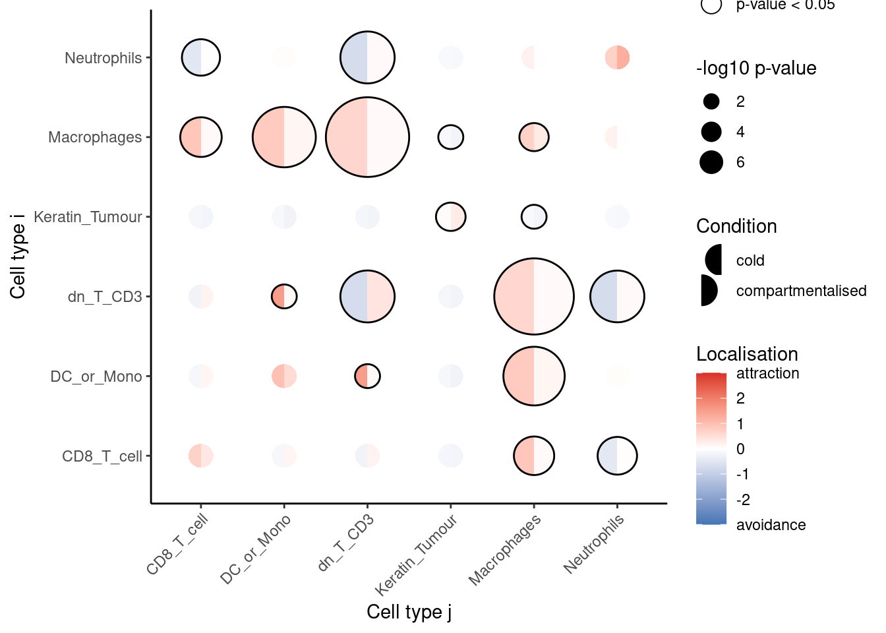
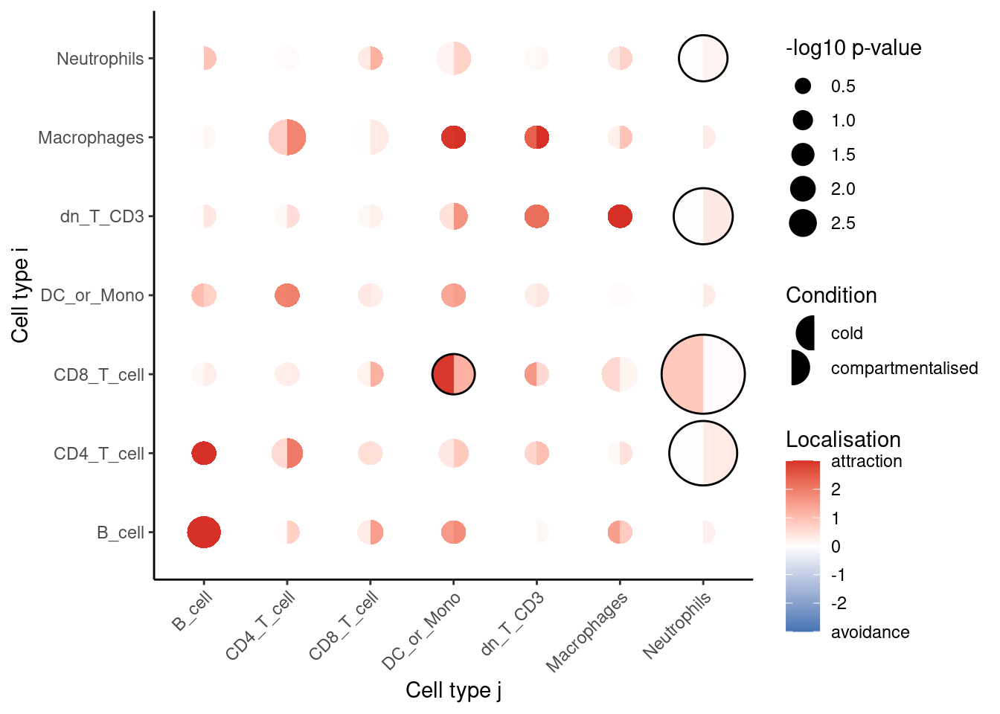
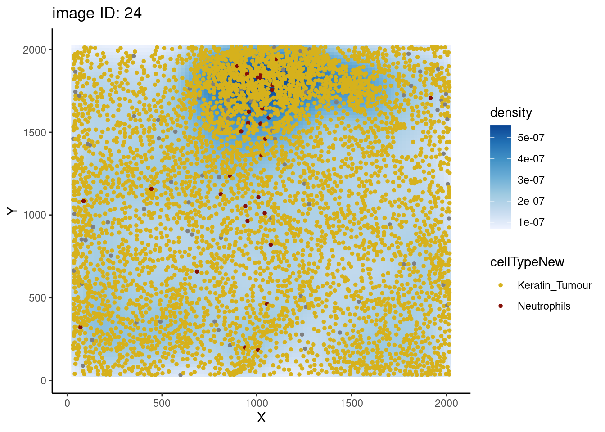
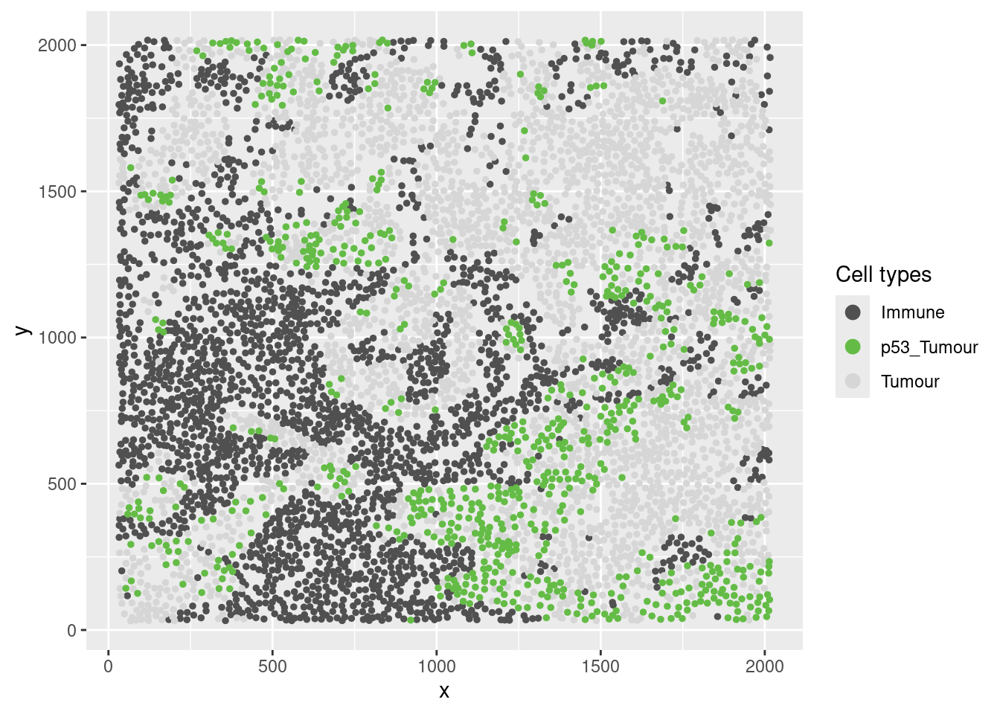
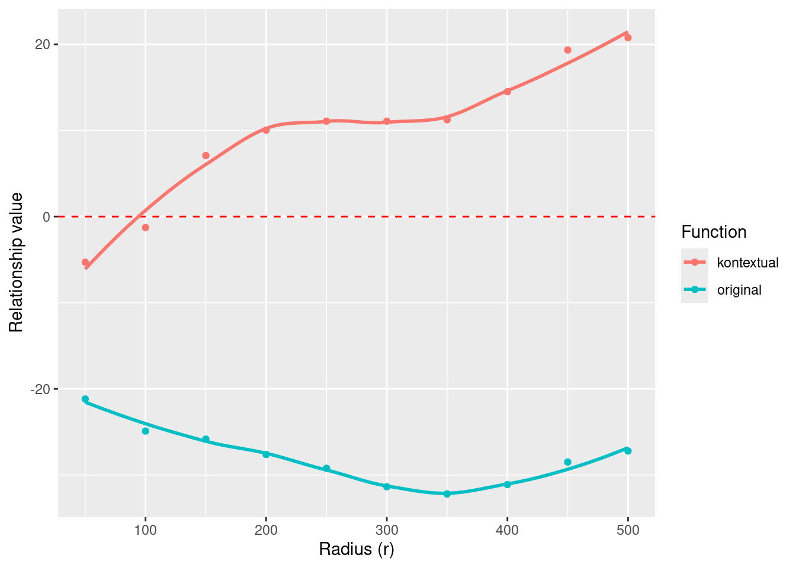
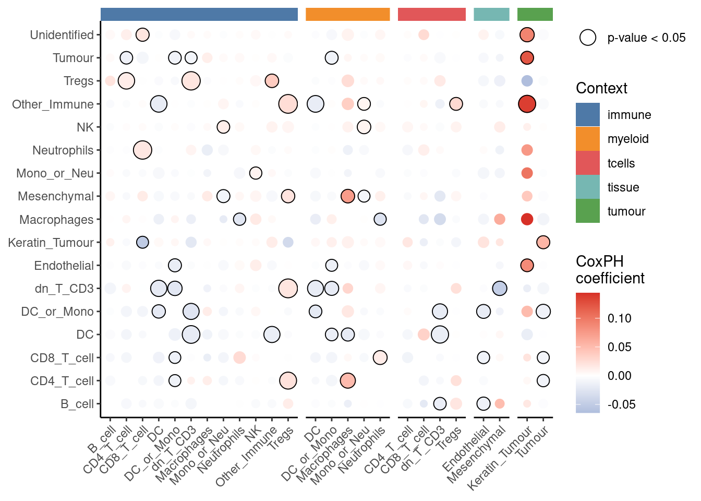
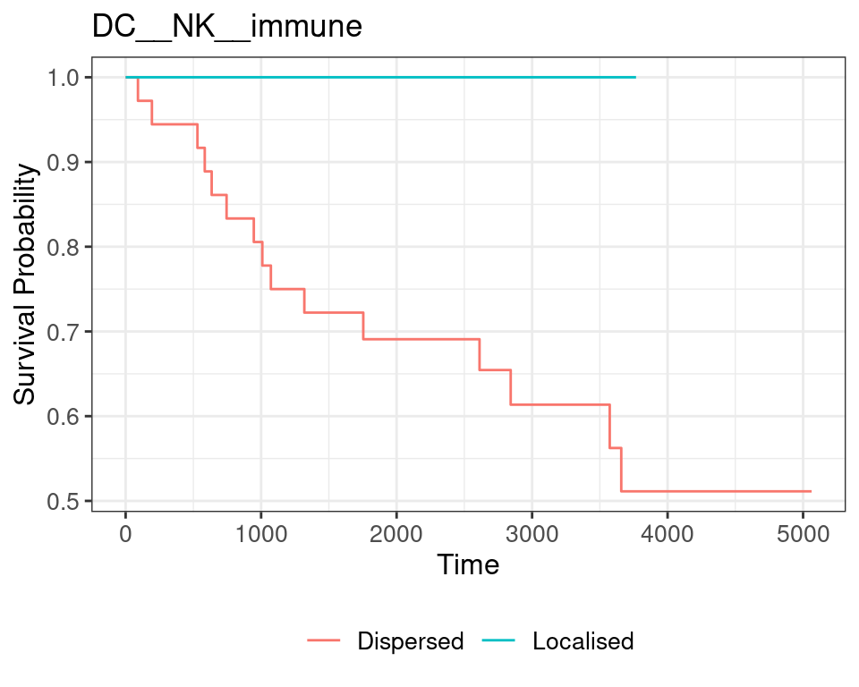

# load required packages
library(spicyR)
library(Statial)
library(ggplot2)
library(SpatialExperiment)
library(SpatialDatasets)
library(imcRtools)
library(dplyr)
library(survival)
library(tibble)
library(treekoR)
library(ggsurvfit)
nCores <- 24 Cell localisation
Now that we’ve finished performing all of our upstream preprocessing (segmentation, quality control, and annotation), we can now begin dissecting out interesting findings for our datasets. One of the primary motivations behind pursuing a spatial technology as opposed to a space-agnostic technology such as single-cell RNA sequencing, is that we are more able to tease out whether changes are occurring spatially, i.e. are two cell types closer together in a disease state vs a non-disease state. Whilst these changes are usually visually obvious, to quantify localisation and dispersion relationships, more advanced statistical modelling is required.
4.1 spicyR: Cell localisation
This section provides step-by-step instructions on assessing how the localisation of different cell types changes across different disease conditions.
We use the (keren2018?) breast cancer dataset to compare the spatial distribution of immune cells in individuals with different levels of tumour infiltration (cold and compartmentalised).
The data is stored as a SpatialExperiment object and contains single-cell spatial data from 41 images.
kerenSPE <- SpatialDatasets::spe_Keren_2018()The cell types in this dataset includes 11 immune cell types (double negative CD3 T cells, CD4 T cells, B cells, monocytes, macrophages, CD8 T cells, neutrophils, natural killer cells, dendritic cells, regulatory T cells), 2 structural cell types (endothelial, mesenchymal), 2 tumour cell types (keratin+ tumour, tumour) and one unidentified category. Below we’ve provided detailed information on the statistical backend of spicyR.
4.1.1 Linear modelling
To investigate changes in localisation between two different cell types, we measure the level of localisation between two cell types by modelling with the L-function. The L-function is a variance-stabilised K-function given by the equation
\[ \widehat{L_{ij}} (r) = \sqrt{\frac{\widehat{K_{ij}}(r)}{\pi}} \]
with \(\widehat{K_{ij}}\) defined as
\[ \widehat{K_{ij}} (r) = \frac{|W|}{n_i n_j} \sum_{n_i} \sum_{n_j} 1 \{d_{ij} \leq r \} e_{ij} (r) \]
where \(\widehat{K_{ij}}\) summarises the degree of co-localisation of cell type \(j\) with cell type \(i\), \(n_i\) and \(n_j\) are the number of cells of type \(i\) and \(j\), \(|W|\) is the image area, \(d_{ij}\) is the distance between two cells and \(e_{ij} (r)\) is an edge correcting factor.
Specifically, the mean difference between the experimental function and the theoretical function is used as a measure for the level of localisation, defined as
\[ u = \sum_{r' = r_{\text{min}}}^{r_{\text{max}}} \widehat L_{ij, \text{Experimental}} (r') - \widehat L_{ij, \text{Poisson}} (r') \]
where \(u\) is the sum is taken over a discrete range of \(r\) between \(r_{\text{min}}\) and \(r_{\text{max}}\). Differences of the statistic \(u\) between two conditions is modelled using a weighted linear model.
4.1.2 Test for changes in localisation for a specific pair of cells
Firstly, we can test whether one cell type tends to be more localised with another cell type in one condition compared to the other. This can be done using the spicy() function, where we specify the condition parameter.
In this example, we want to see whether or not neutrophils (to) tend to be found around CD8 T cells (from) in compartmentalised tumours compared to cold tumours. Given that there are 3 conditions, we can specify the desired conditions by setting the order of our condition factor. spicy will choose the first level of the factor as the base condition and the second level as the comparison condition. spicy will also naturally coerce the condition column into a factor if it is not already a factor. The column containing cell type annotations can be specified using the cellTypeCol argument. By default, spicy uses the column named cellType in the SpatialExperiment object.
spicyTestPair <- spicy(
kerenSPE,
condition = "tumour_type",
from = "CD8_T_cell",
to = "Neutrophils"
)
topPairs(spicyTestPair) intercept coefficient p.value adj.pvalue
CD8_T_cell__Neutrophils -109.081 112.0185 2.166646e-05 2.166646e-05
from to
CD8_T_cell__Neutrophils CD8_T_cell NeutrophilsWe obtain a spicy object which details the results of the modelling performed. The topPairs() function can be used to obtain the associated coefficients and p-value.
As the coefficient in spicyTestPair is positive, we find that neutrophils are significantly more likely to be found near CD8 T cells in the compartmentalised tumours group compared to the cold tumour group.
4.1.3 Test for changes in localisation for all pairwise cell combinations
We can perform what we did above for all pairwise combinations of cell types by excluding the from and to parameters in spicy().
spicyTest <- spicy(
kerenSPE,
condition = "tumour_type"
)
topPairs(spicyTest) intercept coefficient p.value adj.pvalue
Macrophages__dn_T_CD3 56.446064 -50.08474 1.080273e-07 3.035568e-05
dn_T_CD3__Macrophages 54.987151 -48.38664 2.194018e-07 3.082595e-05
Macrophages__DC_or_Mono 73.239404 -59.90361 5.224660e-06 4.893765e-04
DC_or_Mono__Macrophages 71.777087 -58.46833 7.431172e-06 5.220399e-04
dn_T_CD3__dn_T_CD3 -63.786032 100.61010 2.878804e-05 1.208706e-03
Neutrophils__dn_T_CD3 -63.141840 69.64356 2.891872e-05 1.208706e-03
dn_T_CD3__Neutrophils -63.133725 70.15508 3.011012e-05 1.208706e-03
DC__Macrophages 96.893239 -92.55112 1.801300e-04 5.758129e-03
Macrophages__DC 96.896215 -93.25194 1.844241e-04 5.758129e-03
CD4_T_cell__Keratin_Tumour -4.845037 -22.14995 2.834659e-04 7.409016e-03
from to
Macrophages__dn_T_CD3 Macrophages dn_T_CD3
dn_T_CD3__Macrophages dn_T_CD3 Macrophages
Macrophages__DC_or_Mono Macrophages DC_or_Mono
DC_or_Mono__Macrophages DC_or_Mono Macrophages
dn_T_CD3__dn_T_CD3 dn_T_CD3 dn_T_CD3
Neutrophils__dn_T_CD3 Neutrophils dn_T_CD3
dn_T_CD3__Neutrophils dn_T_CD3 Neutrophils
DC__Macrophages DC Macrophages
Macrophages__DC Macrophages DC
CD4_T_cell__Keratin_Tumour CD4_T_cell Keratin_TumourAgain, we obtain a spicy object which outlines the result of the linear models performed for each pairwise combination of cell types.
We can also examine the L-function metrics of individual images by using the convenient bind() function on our spicyTest results object.
bind(spicyTest)[1:5, 1:5] imageID condition Keratin_Tumour__Keratin_Tumour
1 1 mixed -2.300602
2 2 mixed -1.989699
3 3 compartmentalised 11.373530
4 4 compartmentalised 33.931133
5 5 compartmentalised 17.922818
dn_T_CD3__Keratin_Tumour B_cell__Keratin_Tumour
1 -5.298543 -20.827279
2 -16.020022 3.025815
3 -21.857447 -24.962913
4 -36.438476 -40.470221
5 -20.816783 -38.138076The results can be represented as a bubble plot using the signifPlot() function.
signifPlot(
spicyTest,
breaks = c(-3, 3, 1),
marksToPlot = c("Macrophages", "DC_or_Mono", "dn_T_CD3", "Neutrophils",
"CD8_T_cell", "Keratin_Tumour")
)
Here, we can observe that the most significant relationships occur between macrophages and double negative CD3 T cells, suggesting that the two cell types are far more dispersed in compartmentalised tumours compared to cold tumours.
To examine a specific cell type-cell type relationship in more detail, we can use spicyBoxplot() and specify either from = "Macrophages" and to = "dn_T_CD3" or rank = 1.
spicyBoxPlot(results = spicyTest,
# from = "Macrophages",
# to = "dn_T_CD3"
rank = 1)Warning: Removed 2 rows containing non-finite outside the scale range
(`stat_boxplot()`).
4.1.4 Linear modelling for custom metrics
spicyR can also be applied to custom distance or abundance metrics. A kNN interactions graph can be generated with the function buildSpatialGraph from the imcRtools package. This generates a colPairs object inside of the SpatialExperiment object.
spicyR provides the function convPairs for converting a colPairs object into an abundance matrix by calculating the average number of nearby cells types for every cell type for a given k. For example, if there exists on average 5 neutrophils for every macrophage in image 1, the column Neutrophil__Macrophage would have a value of 5 for image 1.
kerenSPE <- imcRtools::buildSpatialGraph(kerenSPE,
img_id = "imageID",
type = "knn", k = 20,
coords = c("x", "y"))'sample_id's are duplicated across 'SpatialExperiment' objects to cbind; appending sample indices.The returned object is ordered by the 'imageID' entry.pairAbundances <- convPairs(kerenSPE,
colPair = "knn_interaction_graph")
head(pairAbundances["B_cell__B_cell"]) B_cell__B_cell
1 12.7349608
10 0.2777778
11 0.0000000
12 1.3333333
13 1.2200957
14 0.0000000The custom distance or abundance metrics can then be included in the analysis with the alternateResult parameter. The Statial package contains other custom distance metrics which can be used with spicy.
spicyTestColPairs <- spicy(
kerenSPE,
condition = "tumour_type",
alternateResult = pairAbundances,
weights = FALSE
)
topPairs(spicyTestColPairs) intercept coefficient p.value adj.pvalue
CD8_T_cell__Neutrophils 0.833333333 -0.7592968 0.002645466 0.3291833
B_cell__Tumour 0.001937984 0.2602822 0.004872664 0.3291833
Other_Immune__NK 0.012698413 0.2612881 0.005673068 0.3291833
Unidentified__CD8_T_cell 0.106626794 0.6387339 0.005906526 0.3291833
dn_T_CD3__NK 0.004242424 0.2148797 0.006317829 0.3291833
CD4_T_cell__Neutrophils 0.036213602 0.2947696 0.007902670 0.3291833
Tregs__CD4_T_cell 0.128876212 0.5726201 0.010207087 0.3291833
Endothelial__DC 0.008771930 0.3008523 0.011189533 0.3291833
Tumour__Neutrophils 0.021638939 0.2529045 0.011388850 0.3291833
Mesenchymal__Neutrophils 0.004504505 0.2494301 0.012761315 0.3291833
from to
CD8_T_cell__Neutrophils CD8_T_cell Neutrophils
B_cell__Tumour B_cell Tumour
Other_Immune__NK Other_Immune NK
Unidentified__CD8_T_cell Unidentified CD8_T_cell
dn_T_CD3__NK dn_T_CD3 NK
CD4_T_cell__Neutrophils CD4_T_cell Neutrophils
Tregs__CD4_T_cell Tregs CD4_T_cell
Endothelial__DC Endothelial DC
Tumour__Neutrophils Tumour Neutrophils
Mesenchymal__Neutrophils Mesenchymal NeutrophilssignifPlot(
spicyTestColPairs,
breaks = c(-3, 3, 1),
marksToPlot = c("Macrophages", "dn_T_CD3", "CD4_T_cell",
"B_cell", "DC_or_Mono", "Neutrophils", "CD8_T_cell")
)
4.1.5 Performing survival analysis
spicy can also be used to perform survival analysis to asses whether changes in co-localisation between cell types are associated with survival probability. spicy requires the SingleCellExperiment object being used to contain a column called survival as a Surv object.
kerenSPE$event = 1 - kerenSPE$Censored
kerenSPE$survival = Surv(kerenSPE$`Survival_days_capped*`, kerenSPE$event)We can then perform survival analysis using the spicy function by specifying condition = "survival". We can then access the corresponding coefficients and p-values by accessing the survivalResults slot in the spicy results object.
# Running survival analysis
spicySurvival = spicy(kerenSPE,
condition = "survival")
# top 10 significant pairs
head(spicySurvival$survivalResults, 10)# A tibble: 10 × 4
test coef se.coef p.value
<chr> <dbl> <dbl> <dbl>
1 Other_Immune__Tregs 0.0236 0.00866 0.00000893
2 CD4_T_cell__Tregs 0.0177 0.00685 0.0000124
3 Tregs__Other_Immune 0.0237 0.00873 0.0000126
4 Tregs__CD4_T_cell 0.0171 0.00676 0.0000285
5 CD8_T_cell__CD8_T_cell 0.00605 0.00272 0.000332
6 Tumour__CD8_T_cell -0.0305 0.0114 0.000617
7 CD8_T_cell__Tumour -0.0305 0.0116 0.000721
8 CD4_T_cell__dn_T_CD3 0.00845 0.00353 0.000794
9 dn_T_CD3__CD4_T_cell 0.00840 0.00353 0.000937
10 DC__Other_Immune -0.0289 0.0123 0.00103 4.1.6 Accounting for tissue inhomogeneity
The spicy function can also account for tissue inhomogeneity to avoid false positives or negatives. This can be done by setting the sigma = parameter within the spicy function. By default, sigma is set to NULL, and spicy assumes a homogeneous tissue structure.
For example, when we examine the L-function for Keratin_Tumour__Neutrophils when sigma = NULL and Rs = 100, the value is positive, indicating attraction between the two cell types.
# filter SPE object to obtain image 24 data
kerenSubset = kerenSPE[, colData(kerenSPE)$imageID == "24"]
pairwiseAssoc = getPairwise(kerenSubset,
sigma = NULL,
Rs = 100) |>
as.data.frame()
pairwiseAssoc[["Keratin_Tumour__Neutrophils"]][1] 10.88892When we specify sigma = 20 and re-calculate the L-function, it indicates that there is no relationship between Keratin_Tumour and Neutrophils, i.e., there is no major attraction or dispersion, as it now takes into account tissue inhomogeneity.
pairwiseAssoc = getPairwise(kerenSubset,
sigma = 20,
Rs = 100) |>
as.data.frame()
pairwiseAssoc[["Keratin_Tumour__Neutrophils"]][1] 0.9024836# obtain colData for image 24
cData = colData(kerenSPE) |> as.data.frame() |>
dplyr::filter(imageID == "24")
# obtain cells present in image 24
coords = spatialCoords(kerenSPE) |> as.data.frame()
coords$cellID = rownames(coords)
coords = coords |> dplyr::filter(cellID %in% cData$CellID)
cData$X = coords$x
cData$Y = coords$y
cData = cData |>
dplyr::mutate(cellTypeNew = ifelse(cellType %in% c("Keratin_Tumour", "Neutrophils"),
cellType, "Other"))
pal = setNames(c("#d6b11c", "#850f07"),
c("Keratin_Tumour", "Neutrophils"))
ggplot() +
stat_density_2d(data = cData, aes(x = X, y = Y, fill = after_stat(density)),
geom = "raster",
contour = FALSE) +
geom_point(data = cData |> filter(cellType != "Other"),
aes(x = X, y = Y, colour = cellTypeNew), size = 1) +
scale_color_manual(values = pal) +
scale_fill_distiller(palette = "Blues", direction = 1) +
theme_classic() +
labs(title = "image ID: 24")
Plotting image 24 shows that the supposed co-localisation occurs due to the dense cluster of cells near the top of the image.
4.1.7 Mixed effects modelling
spicyR supports mixed effects modelling when multiple images are obtained for each subject. In this case, subject is treated as a random effect and condition is treated as a fixed effect. To perform mixed effects modelling, we can specify the subject parameter in the spicy function.
spicyMixedTest <- spicy(
diabetesData,
condition = "stage",
subject = "case"
)4.2 Kontextual: Context aware cell localisation
Kontextual is a method for performing inference on cell localisation which explicitly defines the contexts in which spatial relationships between cells can be identified and interpreted. These contexts may represent landmarks, spatial domains, or groups of functionally similar cells which are consistent across regions. By modelling spatial relationships between cells relative to these contexts, Kontextual produces robust spatial quantifications that are not confounded by biases such as the choice of region to image and the tissue structure present in the images.
In this example we demonstrate how cell type hierarchies can be used as a means to derive appropriate “contexts” for the evaluation of cell localisation. We then demonstrate the types of conclusions which Kontextual enables.
4.2.1 Using cell type hierarchies to define a “context”
A cell type hierarchy may be used to define the “context” in which cell type relationships are evaluated within. A cell type hierarchy defines how cell types are functionally related to one another. The bottom of the hierarchy represents homogeneous populations of a cell type (child), the cell populations at the nodes of the hierarchy represent broader parent populations with shared generalised function. For example CD4 T cells may be considered a child population to the Immune parent population.
There are two ways to define the cell type hierarchy. First, they can be defined based on our biological understanding of the cell types. We can represent this by creating a named list containing the names of each parent and the associated vector of child cell types.
Note: The all vector must be created to include cell types which do not have a parent e.g. the undefined cell type in this data set.
# Examine all cell types in image
unique(kerenSPE$cellType) [1] "Keratin_Tumour" "dn_T_CD3" "B_cell" "CD4_T_cell"
[5] "DC_or_Mono" "Unidentified" "Macrophages" "CD8_T_cell"
[9] "Other_Immune" "Endothelial" "Mono_or_Neu" "Mesenchymal"
[13] "Neutrophils" "NK" "Tumour" "DC"
[17] "Tregs" # Named list of parents and their child cell types
biologicalHierarchy = list(
"tumour" = c("Keratin_Tumour", "Tumour"),
"tcells" = c("dn_T_CD3", "CD4_T_cell", "CD8_T_cell", "Tregs"),
"myeloid" = c("DC_or_Mono", "DC", "Mono_or_Neu", "Macrophages", "Neutrophils"),
"tissue" = c("Endothelial", "Mesenchymal")
)
# Adding more broader immune parent populationse
biologicalHierarchy$immune = c(biologicalHierarchy$bcells,
biologicalHierarchy$tcells,
biologicalHierarchy$myeloid,
"NK", "Other_Immune", "B_cell")
# Creating a vector for all cellTypes
all <- unique(kerenSPE$cellType)Alternatively, you can use the treeKor bioconductor package treekoR to define these hierarchies in a data driven way.
Note: These parent populations may not be accurate as we are using a small subset of the data.
# Calculate hierarchy using treekoR
kerenTree <- treekoR::getClusterTree(t(assay(kerenSPE, "intensities")),
kerenSPE$cellType,
hierarchy_method="hopach",
hopach_K = 1)
# Convert treekoR result to a name list of parents and children.
treekorParents = getParentPhylo(kerenTree)
treekorParents$parent_1
[1] "Keratin_Tumour" "DC_or_Mono" "Unidentified" "Macrophages"
[5] "Endothelial" "Mono_or_Neu" "Mesenchymal" "Neutrophils"
[9] "Tumour" "DC"
$parent_2
[1] "dn_T_CD3" "B_cell" "CD4_T_cell" "CD8_T_cell" "Other_Immune"
[6] "NK" "Tregs" 4.2.2 Application on triple negative breast cancer image.
Here we examine an image highlighted in the Keren et al. 2018 manuscript where accounting for context information enables new conclusions. In image 6 of the Keren et al. dataset, we can see that p53+ tumour cells and immune cells are dispersed i.e. these two cell types are not mixing. However we can also see that p53+ tumour cells appear much more localised to immune cells relative to the tumour context (tumour cells and p53+ tumour cells).
# Lets define a new cell type vector
kerenSPE$cellTypeNew <- kerenSPE$cellType
# Select for all cells that express higher than baseline level of p53
p53Pos <- assay(kerenSPE)["p53", ] > -0.300460
# Find p53+ tumour cells
kerenSPE$cellTypeNew[kerenSPE$cellType %in% biologicalHierarchy$tumour] <- "Tumour"
kerenSPE$cellTypeNew[p53Pos & kerenSPE$cellType %in% biologicalHierarchy$tumour] <- "p53_Tumour"
# Group all immune cells under the name "Immune"
kerenSPE$cellTypeNew[kerenSPE$cellType %in% biologicalHierarchy$immune] <- "Immune"
kerenSPE$x <- spatialCoords(kerenSPE)[,"x"]
kerenSPE$y <- spatialCoords(kerenSPE)[,"y"]
# Plot image 6
kerenSPE |>
colData() |>
as.data.frame() |>
filter(imageID == "6") |>
filter(cellTypeNew %in% c("Immune", "Tumour", "p53_Tumour")) |>
arrange(cellTypeNew) |>
ggplot(aes(x = x.1, y = y, color = cellTypeNew)) +
geom_point(size = 1) +
scale_colour_manual(values = c("Immune" = "#505050", "p53_Tumour" = "#64BC46", "Tumour" = "#D6D6D6")) +
guides(colour = guide_legend(title = "Cell types", override.aes = list(size = 3)))
Kontextual accepts a SingleCellExperiment object, a single image, or list of images from a SingleCellExperiment object, which gets passed into the cells argument. The two cell types which will be evaluated are specified in the to and from arguments. A parent population must also be specified in the parent argument, note the parent cell population must include the to cell type. The argument r will specify the radius which the cell relationship will be evaluated on. Kontextual supports parallel processing, the number of cores can be specified using the cores argument. Kontextual can take a single value or multiple values for each argument and will test all combinations of the arguments specified.
We can calculate these relationships across all images for a single radius (r = 100). Small radii will examine local spatial relationships, whereas larger radii will examine global spatial relationships.
p53_Kontextual <- Kontextual(
cells = kerenSPE,
r = 100,
from = "Immune",
to = "p53_Tumour",
parent = c("p53_Tumour", "Tumour"),
cellType = "cellTypeNew"
)
p53_Kontextual imageID test original kontextual r inhomL
1 1 Immune__p53_Tumour -16.212016 -1.6815952 100 FALSE
2 10 Immune__p53_Tumour -14.715356 -1.7937407 100 FALSE
3 11 Immune__p53_Tumour -11.696597 -7.4615661 100 FALSE
4 12 Immune__p53_Tumour -9.777271 -2.6287005 100 FALSE
5 13 Immune__p53_Tumour -15.613023 -3.9937364 100 FALSE
6 14 Immune__p53_Tumour -14.671281 -4.2879138 100 FALSE
7 15 Immune__p53_Tumour 8.369183 10.6710168 100 FALSE
8 16 Immune__p53_Tumour -41.081088 -20.9688333 100 FALSE
9 17 Immune__p53_Tumour -6.331105 5.0017104 100 FALSE
10 18 Immune__p53_Tumour -1.953366 0.5795853 100 FALSE
11 19 Immune__p53_Tumour -27.834450 -18.7433000 100 FALSE
12 2 Immune__p53_Tumour -4.989150 -0.5330373 100 FALSE
13 20 Immune__p53_Tumour -20.580091 -9.2542544 100 FALSE
14 21 Immune__p53_Tumour -14.300802 -7.1425133 100 FALSE
15 22 Immune__p53_Tumour -13.673007 -12.9663547 100 FALSE
16 23 Immune__p53_Tumour 15.803493 37.3584378 100 FALSE
17 24 Immune__p53_Tumour -30.319961 -31.8146274 100 FALSE
18 25 Immune__p53_Tumour 6.262995 6.9429103 100 FALSE
19 26 Immune__p53_Tumour -38.190137 -24.6000029 100 FALSE
20 27 Immune__p53_Tumour -2.373587 4.4044397 100 FALSE
21 28 Immune__p53_Tumour -70.058615 -33.4395839 100 FALSE
22 29 Immune__p53_Tumour -20.728463 -7.0172785 100 FALSE
23 3 Immune__p53_Tumour 1.719549 44.5060581 100 FALSE
24 31 Immune__p53_Tumour -12.306957 -5.2820792 100 FALSE
25 32 Immune__p53_Tumour -18.174569 -10.8972277 100 FALSE
26 33 Immune__p53_Tumour -19.750457 -19.6246151 100 FALSE
27 34 Immune__p53_Tumour -49.004947 -35.1320255 100 FALSE
28 35 Immune__p53_Tumour -75.980619 -66.2395276 100 FALSE
29 36 Immune__p53_Tumour -18.853398 -21.4398044 100 FALSE
30 37 Immune__p53_Tumour -43.624905 -27.7162991 100 FALSE
31 38 Immune__p53_Tumour -12.544687 -3.0415484 100 FALSE
32 39 Immune__p53_Tumour -19.293290 -4.5192485 100 FALSE
33 4 Immune__p53_Tumour NA NA 100 FALSE
34 40 Immune__p53_Tumour -37.744261 -27.9604962 100 FALSE
35 41 Immune__p53_Tumour -33.776940 -22.6113096 100 FALSE
36 5 Immune__p53_Tumour NA NA 100 FALSE
37 6 Immune__p53_Tumour -24.897348 -1.2724241 100 FALSE
38 7 Immune__p53_Tumour -13.068307 0.6361875 100 FALSE
39 8 Immune__p53_Tumour NA NA 100 FALSE
40 9 Immune__p53_Tumour -31.857501 1.0261067 100 FALSEThe kontextCurve function plots the L-function value and Kontextual values over a range of radii. If the points lie above the red line (expected pattern) then localisation is indicated for that radius, if the points lie below the red line then dispersion is indicated.
As seen in the following plot the L-function produces negative values over a range of radii, indicating that p53+ tumour cells and immune cells are dispersed from one another. However by taking into account the tumour context, Kontextual shows positive values over some radii, indicating localisation between p53+ tumour cells and immune cells.
curves <- kontextCurve(
cells = kerenSPE,
from = "Immune",
to = "p53_Tumour",
parent = c("p53_Tumour", "Tumour"),
rs = seq(50, 510, 50),
image = "6",
cellType = "cellTypeNew",
cores = nCores
)
kontextPlot(curves)
Alternatively all pairwise cell relationships and their corresponding parent in the dataset can be tested. A data frame with all pairwise combinations can be creating using the parentCombinations function. This function takes in a vector of all the cells, as well as the named list of parents and children created earlier in the parentList argument. As shown below the output is a data frame specifying the to, from, and parent arguments for Kontextual.
Note: the output of getPhyloParent may also be using the in the parentList argument, for example if you wanted to use the treekoR defined hierarchy instead.
# Get all relationships between cell types and their parents
parentDf <- parentCombinations(
all = all,
parentList = biologicalHierarchy
)4.2.3 Calculating all pairwise relationships
Rather than specifying to, from, and parent in Kontextual, the output from parentCombinations can be inputed into Kontextual using the parentDf argument, to examine all pairwise relationships in the dataset. This chunk will take a significant amount of time to run, for demonstration the results have been saved and are loaded in.
# Running Kontextual on all relationships across all images.
kerenKontextual <- Kontextual(
cells = kerenSPE,
parentDf = parentDf,
r = 100,
cores = nCores
)For every pairwise relationship (named accordingly: from__to__parent) Kontextual outputs the L-function values (original) and the Kontextual value. The relationships where the L-function and Kontextual disagree (e.g. one metric is positive and the other is negative) represent relationships where adding context information results in different conclusions on the spatial relationship between the two cell types.
4.2.4 Associating the relationships with survival outcomes.
To examine whether the features obtained from Statial are associated with patient outcomes or groupings, we can use the spicy function from the spicyR package.
In addition to this, the Kontextual results must be converted from a data.frame to a wide matrix, this can be done using prepMatrix. Note, to extract the original L-function values, specify column = "original" in prepMatrix.
# Converting Kontextual result into data matrix
kontextMat <- prepMatrix(kerenKontextual)
# Ensuring rownames of kontextMat match up with the image IDs of the SCE object
kontextMat <- kontextMat[kerenSPE$imageID |> unique(), ]
# Replace NAs with 0
kontextMat[is.na(kontextMat)] <- 0Finally, both the SingleCellExperiment object and the Kontextual matrix are passed into the spicy function, with condition = "survival". The resulting coefficients and p values can be obtained by accessing the survivalResults name.
Note: You can specify additional covariates and include a subject id for mixed effects survival modelling, see \code{ for more information.
# Running survival analysis
survivalResults = spicy(cells = kerenSPE,
alternateResult = kontextMat,
condition = "survival",
weights = TRUE)
head(survivalResults$survivalResults, 10)# A tibble: 10 × 4
test coef se.coef p.value
<chr> <dbl> <dbl> <dbl>
1 dn_T_CD3__Tregs__immune 0.0187 0.00716 0.000000572
2 Other_Immune__Tregs__immune 0.0255 0.00885 0.000000727
3 Tregs__dn_T_CD3__immune 0.0189 0.00715 0.00000169
4 Neutrophils__CD8_T_cell__immune 0.0178 0.00651 0.00000172
5 DC__dn_T_CD3__immune -0.0195 0.00661 0.00000710
6 DC__dn_T_CD3__tcells -0.0171 0.00758 0.0000167
7 Other_Immune__Keratin_Tumour__tumour 0.137 0.0406 0.0000212
8 CD4_T_cell__Tregs__immune 0.0216 0.00901 0.0000306
9 Other_Immune__DC__myeloid -0.0181 0.00664 0.0000492
10 Other_Immune__DC__immune -0.0186 0.00669 0.0000656 The survival results can also be visualised using the signifPlot function.
signifPlot(survivalResults)
As we can see from the results DC__NK__immune is the one of the most significant pairwise relationship which contributes to patient survival. That is the relationship between dendritic cells and natural killer cells, relative to the parent population of immune cells. We can see that there is a negative coefficient associated with this relationship, which tells us an increase in localisation of these cell types relative to immune cells leads to better survival outcomes for patients.
The association between DC__NK__immune and survival can also be visualised on a Kaplan-Meier curve. First, we extract survival data from the SingleCellExperiment object and create a survival vector.
# Extracting survival data
survData <- kerenSPE |>
colData() |>
data.frame() |>
select(imageID, survival) |>
unique()
# Creating survival vector
kerenSurv <- survData$survival
names(kerenSurv) <- survData$imageID
kerenSurv 1 2 3 4 5 6 7 8 9 10 11 12 13
2612 745 3130+ 2523+ 1683+ 2275+ 584 946 3767+ 3822+ 3774+ 4353+ 1072
14 15 16 17 18 19 20 21 22 23 24 25 26
4145+ 1754 530 2842 5063+ 3725+ 4761+ 635 NA? 91 194 4785+ 4430+
27 28 29 31 32 33 34 35 36 37 38 39 40
3658 3767+ 1319 1009 1568+ 1738+ 2832+ 2759+ 3063+ 2853+ NA? 2096+ 3573
41
3355+ Next, we extract the Kontextual values of this relationship across all images. We then determine if dendritic and natural killer cells are relatively attracted or avoiding in each image by comparing the Kontextual value in each image to the median Kontextual value.
Finally, we plot a Kaplan-Meier curve using the ggsurvfit package. As shown below, when dendritic and natural killer cells are more localised to one another relative to the immune cell population, patients tend to have better survival outcomes.
# Selecting most significant relationship
survRelationship <- kontextMat[["DC__NK__immune"]]
survRelationship <- ifelse(survRelationship > median(survRelationship), "Localised", "Dispersed")
# Plotting Kaplan-Meier curve
survfit2(kerenSurv ~ survRelationship) |>
ggsurvfit() +
ggtitle("DC__NK__immune")
4.3 sessionInfo
sessionInfo()R version 4.4.1 (2024-06-14)
Platform: x86_64-pc-linux-gnu
Running under: Debian GNU/Linux 12 (bookworm)
Matrix products: default
BLAS: /usr/lib/x86_64-linux-gnu/openblas-pthread/libblas.so.3
LAPACK: /usr/lib/x86_64-linux-gnu/openblas-pthread/libopenblasp-r0.3.21.so; LAPACK version 3.11.0
locale:
[1] LC_CTYPE=C.UTF-8 LC_NUMERIC=C LC_TIME=C.UTF-8
[4] LC_COLLATE=C.UTF-8 LC_MONETARY=C.UTF-8 LC_MESSAGES=C.UTF-8
[7] LC_PAPER=C.UTF-8 LC_NAME=C LC_ADDRESS=C
[10] LC_TELEPHONE=C LC_MEASUREMENT=C.UTF-8 LC_IDENTIFICATION=C
time zone: Australia/Sydney
tzcode source: system (glibc)
attached base packages:
[1] stats4 stats graphics grDevices utils datasets methods
[8] base
other attached packages:
[1] ggsurvfit_1.1.0 treekoR_1.14.0
[3] tibble_3.2.1 survival_3.7-0
[5] dplyr_1.1.4 imcRtools_1.12.0
[7] SpatialDatasets_1.4.0 ExperimentHub_2.14.0
[9] AnnotationHub_3.14.0 BiocFileCache_2.14.0
[11] dbplyr_2.5.0 SpatialExperiment_1.16.0
[13] SingleCellExperiment_1.28.1 SummarizedExperiment_1.36.0
[15] Biobase_2.66.0 GenomicRanges_1.58.0
[17] GenomeInfoDb_1.42.0 IRanges_2.40.0
[19] S4Vectors_0.44.0 BiocGenerics_0.52.0
[21] MatrixGenerics_1.18.0 matrixStats_1.4.1
[23] ggplot2_3.5.1 Statial_1.8.0
[25] spicyR_1.18.0
loaded via a namespace (and not attached):
[1] vroom_1.6.5 tiff_0.1-12
[3] goftest_1.2-3 DT_0.33
[5] Biostrings_2.74.0 HDF5Array_1.34.0
[7] TH.data_1.1-2 vctrs_0.6.5
[9] spatstat.random_3.3-2 digest_0.6.37
[11] png_0.1-8 shape_1.4.6.1
[13] proxy_0.4-27 ggrepel_0.9.6
[15] deldir_2.0-4 magick_2.8.5
[17] MASS_7.3-61 reshape2_1.4.4
[19] httpuv_1.6.15 foreach_1.5.2
[21] withr_3.0.2 ggfun_0.1.7
[23] xfun_0.49 ggpubr_0.6.0
[25] memoise_2.0.1 RTriangle_1.6-0.14
[27] cytomapper_1.18.0 ggbeeswarm_0.7.2
[29] RProtoBufLib_2.18.0 systemfonts_1.1.0
[31] tidytree_0.4.6 zoo_1.8-12
[33] GlobalOptions_0.1.2 Formula_1.2-5
[35] KEGGREST_1.46.0 promises_1.3.0
[37] httr_1.4.7 rstatix_0.7.2
[39] rhdf5filters_1.18.0 rhdf5_2.50.0
[41] rstudioapi_0.17.1 UCSC.utils_1.2.0
[43] units_0.8-5 generics_0.1.3
[45] concaveman_1.1.0 curl_6.0.0
[47] zlibbioc_1.52.0 ggraph_2.2.1
[49] polyclip_1.10-7 GenomeInfoDbData_1.2.13
[51] SparseArray_1.6.0 fftwtools_0.9-11
[53] xtable_1.8-4 stringr_1.5.1
[55] doParallel_1.0.17 evaluate_1.0.1
[57] S4Arrays_1.6.0 hms_1.1.3
[59] colorspace_2.1-1 filelock_1.0.3
[61] spatstat.data_3.1-2 magrittr_2.0.3
[63] readr_2.1.5 later_1.3.2
[65] viridis_0.6.5 ggtree_3.14.0
[67] lattice_0.22-6 spatstat.geom_3.3-3
[69] XML_3.99-0.17 scuttle_1.16.0
[71] ggupset_0.4.0 class_7.3-22
[73] svgPanZoom_0.3.4 pillar_1.9.0
[75] nlme_3.1-165 iterators_1.0.14
[77] EBImage_4.48.0 compiler_4.4.1
[79] beachmat_2.22.0 stringi_1.8.4
[81] sf_1.0-19 tensor_1.5
[83] minqa_1.2.8 ClassifyR_3.10.0
[85] plyr_1.8.9 crayon_1.5.3
[87] abind_1.4-8 gridGraphics_0.5-1
[89] locfit_1.5-9.10 sp_2.1-4
[91] graphlayouts_1.2.0 bit_4.5.0
[93] terra_1.7-83 sandwich_3.1-1
[95] codetools_0.2-20 multcomp_1.4-26
[97] e1071_1.7-16 GetoptLong_1.0.5
[99] plotly_4.10.4 mime_0.12
[101] MultiAssayExperiment_1.32.0 splines_4.4.1
[103] circlize_0.4.16 Rcpp_1.0.13-1
[105] knitr_1.49 blob_1.2.4
[107] utf8_1.2.4 clue_0.3-65
[109] BiocVersion_3.20.0 lme4_1.1-35.5
[111] fs_1.6.5 nnls_1.6
[113] ggplotify_0.1.2 ggsignif_0.6.4
[115] Matrix_1.7-0 scam_1.2-17
[117] statmod_1.5.0 tzdb_0.4.0
[119] svglite_2.1.3 tweenr_2.0.3
[121] pkgconfig_2.0.3 pheatmap_1.0.12
[123] tools_4.4.1 cachem_1.1.0
[125] RSQLite_2.3.7 viridisLite_0.4.2
[127] DBI_1.2.3 numDeriv_2016.8-1.1
[129] fastmap_1.2.0 rmarkdown_2.29
[131] scales_1.3.0 grid_4.4.1
[133] shinydashboard_0.7.2 broom_1.0.7
[135] patchwork_1.3.0 BiocManager_1.30.25
[137] carData_3.0-5 farver_2.1.2
[139] tidygraph_1.3.1 mgcv_1.9-1
[141] yaml_2.3.10 ggthemes_5.1.0
[143] cli_3.6.3 purrr_1.0.2
[145] hopach_2.66.0 lifecycle_1.0.4
[147] mvtnorm_1.3-2 backports_1.5.0
[149] BiocParallel_1.40.0 cytolib_2.18.0
[151] gtable_0.3.6 rjson_0.2.23
[153] parallel_4.4.1 ape_5.8
[155] limma_3.62.1 jsonlite_1.8.9
[157] edgeR_4.4.0 bitops_1.0-9
[159] bit64_4.5.2 Rtsne_0.17
[161] FlowSOM_2.14.0 yulab.utils_0.1.8
[163] spatstat.utils_3.1-1 BiocNeighbors_2.0.0
[165] ranger_0.17.0 flowCore_2.18.0
[167] bdsmatrix_1.3-7 spatstat.univar_3.1-1
[169] lazyeval_0.2.2 shiny_1.9.1
[171] ConsensusClusterPlus_1.70.0 htmltools_0.5.8.1
[173] diffcyt_1.26.0 rappdirs_0.3.3
[175] distances_0.1.11 glue_1.8.0
[177] XVector_0.46.0 RCurl_1.98-1.16
[179] treeio_1.30.0 classInt_0.4-10
[181] coxme_2.2-22 jpeg_0.1-10
[183] gridExtra_2.3 boot_1.3-30
[185] igraph_2.1.1 R6_2.5.1
[187] tidyr_1.3.1 ggiraph_0.8.10
[189] labeling_0.4.3 ggh4x_0.2.8
[191] cluster_2.1.6 Rhdf5lib_1.28.0
[193] aplot_0.2.3 nloptr_2.1.1
[195] DelayedArray_0.32.0 tidyselect_1.2.1
[197] vipor_0.4.7 ggforce_0.4.2
[199] raster_3.6-30 car_3.1-3
[201] AnnotationDbi_1.68.0 munsell_0.5.1
[203] KernSmooth_2.23-24 data.table_1.16.2
[205] htmlwidgets_1.6.4 ComplexHeatmap_2.22.0
[207] RColorBrewer_1.1-3 rlang_1.1.4
[209] spatstat.sparse_3.1-0 spatstat.explore_3.3-3
[211] lmerTest_3.1-3 uuid_1.2-1
[213] colorRamps_2.3.4 ggnewscale_0.5.0
[215] fansi_1.0.6 beeswarm_0.4.0